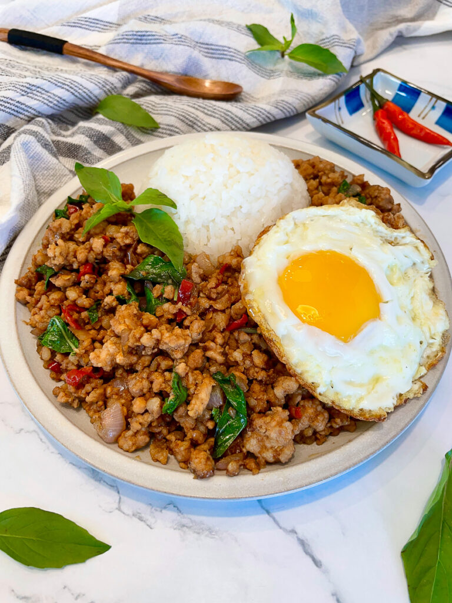

Larb Salad

How to make Pad Krapao
Laab ลาบ is one of the most iconic dishes in Thai cuisine that is popular in many Thai restaurants around the world. To me, it represents one of the best parts about Thai food - spicy, bright flavours loaded with fresh herbs. It is also one of the easiest Thai dishes you can make at home, making it very beginner and weeknight friendly!
While most people, and many Thai restaurants, call this dish larb, the correct pronunciation and the way it should be written is laab. The R is not pronounced.
LAAB is a ground meat salad that hails from the northeast region of Thailand known as Isaan. It is typically made of ground meat and lots of fresh herbs such as mint, cilantro, and green onions. It is dressed with lime juice, fish sauce, dried chili flakes, and most important ingredient of all: toasted rice powder.
Ingredients
- White glutinous rice or jasmine rice, uncooked
- Ground pork
- Shallots, red onion will also work if shallots are not available
- Fresh mint leaves
- Cilantro
- Green onion
- Sawtooth coriander
- Fish sauce
- Lime juice
- Chili flakes
- Sticky rice
- Fresh raw vegetables for serving
Instructions
- Make toasted rice powder: Place the raw rice in a dry skillet pan and cook over medium high heat, moving it constantly, until a deep brown colour develops. Don't stop at golden brown, for the best flavour you want it dark brown!
- Grind the rice with a coffee or spice grinder, or in a mortar and pestle into a coarse powder.
- Add 2 tablespoon water to a medium pot over high heat, then add the pork and stir it constantly to break it up. Once it's cooked, remove from heat.
- Using the pot as your mixing bowl, add shallots into the pork and stir to break up the rings and lightly cook the shallots.
- Add the fish sauce, lime juice, the toasted rice powder, chili flakes, cilantro, sawtooth coriander and green onion into the pot and stir to mix. Taste and adjust seasoning as needed, which may vary because the amount of pork juice that remains in the pot will vary. If you feel like it's a little bit too strong (too tart, too salty) you can add just a pinch of sugar to balance, but do not make it sweet. Remember, there will be sticky rice to balance it all later!
- When ready to serve, stir in the fresh mint leaves. (I like to leave the mint out until serving time because they turn black when exposed to heat)
- Garnish with some mint leaves and more chili flakes. Serve with some fresh crunchy vegetables and sticky rice!